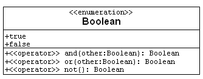

Putting "SID" in a class that called "StudentInClass" so that the object
knows which "Student" is enrolled in the "Class". Just link
"StudentInClass"
to "Student".
In a CASE system, having an attribute "className1" in the "Association"
class
so that the you can find out where an "Association" comes from.
I like to draw a domain model as part of systems analysis -- before the
inception phase, but the book suggests starting at the beginning of the
first
elaboration iteration, see bottom of page 169. This is wise because
this is when you have a use case to select the parts of the domain
that will be valuable to model.
Domain models are about the problem and software artifacts are about the
solution and its code. It is not wise to show your solution muddled
up with the problem. So, model the problem in a separate diagram
and use it to help you create new, different models of your solution.
There is many more incorrect diagrams than correct ones.
First, you have all the models that don't follow the syntax and
semantics of the UML. These are clearly wrong and need
correcting.
There a large number of diagrams that are drawn properly but
don't tell the truth. We also say these are incorrect.
Some are more correct than
others. This is because we don't know everything... especially
at the start of the elaboration phase. As we learn more we can
get a better model. The process is iterative -- just like
in a mathematical iterative method we get closer and closer to
the correct value at each step. That is the theory. In practice
we don't always go back and correct our early domain models.
I think that we should not worry too much about
the correctness of our first Domain Models, the first one is
"always be wrong". Why is that? In my experience
class are forgotten, relations are misunderstood, attributes
misplaced, ....
But it is still important to record what we think.
We can show our best approximation to other
people and get their opinions. We can walk through them. And we
can use them to develop solutions that can be tested... All
this gathers data that let's us improve our understanding of the
stakeholder's world.
It is important to have a visible approximation to improve.
The question is not whether our models are correct but whether they are
useful.
You will see that even a model which doesn't match reality perfectly
can lead to workable software.
Not often in a domain model. Sometimes in a design class diagram.
Public/private/etc are not really a domain concern and so we don't show it
in a domain model.
Interesting question. I guess so.
But you don't have to show it in a domain model.
Domain modeling is about classes and associations so we only show
interesting attributes.
(1) Any time you add an association that is not in the real world you have gone too far.
(2) Any time you show an association that is already implied by a sequence
of associations you have already drawn, you have overcomplicated the diagram.
Instead define the term in the glossary. Example: In a family data base
you might show the association between parent and child, but you
don't show grandparent-grandchild, uncle-nephew, siblings, cousins,
2nd cousins.... instead define them in the glossary.
(3) Any time you have an association that is not going to be useful in a use case it is YAGNI -- You Ain't Gonna Need It. Don't draw it.
Roles are often appear as data members in classes in code. So they can implemented
in any phase of the RUP/UP.
Navigability is indicated by adding an arrowhead to an association. It
shows that the class to which the arrow points does not know about the association,
but the other class does know about the object at the other end. The arrow is
often used in OO Designs (not Domains) to indicate a pointer in code.
To avoid wasting our time and board space. Define them in the glossary.
An attribute has one value... a data type is all the possible
values of an attribute.
Example: attribute -- number_of_students_in_cs375 vs Number.
So you could say that data types describe types of attribute. However
in a domain model attributes are properties of real objects
and not data.
For example: People have names. They would still have names if
we destroyed every computer and every paper record in the world!
So we show "name" as an attribute of Person in our domain model.
We don't worry about coding names
in a domain model. This would be defining a data type to represent
names: perhaps a string, perhaps a record with three parts,
perhaps a VARCHAR in a data base, perhaps a pointer to a complex
data structure, ... etc.
Note important (valuable) properties of attributes as Business Rules,
and you can define Abstract Data Types...
Yes. If you have to draw a diagram describing a new type of data.... and that
means in a Design Class, not a domain one.
The main pitfall is wasting time drawing boxes that do not
need to be drawn. An example follows -- the Boolean data type.
Similarly: Number, Integer(=int), Real (=double), Character (=char),
Byte, String, ...
So in a domain model you are drawing boxes that represent classes
of real things, not computer data. We can note special data types in
in the glossary. They might turn up in design class diagram later,
but mostly they are defined, in detail, in code.
First: you should only show interesting attributes in your Domain
Model diagram. Put in only those that tell your something special
about the class, that define more precisely the kind of object you
are drawing a picture of. Instead it is best to document most
attributes in a data dictionary or glossary.
Student has attributes: name, SID, phone#, address, and status.
If you have a formula for an attribute then it is a derived attribute
and you should document the rule. This is (in my humble opinion) best
put in a a different artifact. I don't like cluttering my diagrams
more than is necessary.
If an attribute is calculated by a constructor or operation then
this should documented, but not it the Domain Model Class Diagram.
Keep that simple and put the details elsewhere.
The book mentions value objects, what are they and how are they used?
See next
On page 163, Larman says value objects slightly differ from data types. How do they differ when applying UML diagrams?
YAGNI. I think they are objects that are just values. No operations
or member functions. At most you can combine them -- like numbers
can be added and subtracted. I agree with Larman. A fuzzy concept
that isn't worth worrying about.
In a domain model
value objects
are things like: bits, numbers, quantities, money, measurements, dates,
times,
codes, text, strings, etc. We don't need to draw them as a class.
They are well analyzed all ready -- some have
been studied for millenia -- so we don't need to clutter the diagram.
On the other hand some of them should be put in the glossary.
Codes and units deserve
to be recorded in the glossary.
NASA caused a lot of entertainment when they managed to miss Mars.
Mars is a large target and they missed it -- just because one set
of programmers used metric units and a different group used Imperial
units: feet are not meters!
The book briefly mentions something called "value objects", which are said
to be like data types, but with minor variations. Could you please explain
these variations?
When we come to code value objects we will probably use a predefined
or primitive data type in our programming language.
So we use the name in our models as a type of data
and define the name, briefly, in a glossary rather than a diagram.
The UML also uses the word "data type" for classes of value objects.
But this stereotype only pays off in a design model. Avoid in a domain
model.
Are value objects important? And how are they similar to data types? also
what are the differences?
The main importance for value objects in domain modeling is that they
let you draw simpler diagrams. Attributes that are values have a data type
that doesn't need a box on the diagram.
Value objects get more important when we move from a model of the real
world into modeling the code inside our program (design models).
The words "data type" is UML jargon for classes that contain value objects.
I don't plan to ask you to repeat these definitions in a quiz or on the
final BUT your models (projects, in class, in the final) must not show a
box describing a data type/class of obvious value objects.
Experience -- in the civil service, once you introduced a "Date"
entity it rapidly would get attached to just about every other
entity -- often two or three times. So we had a rule of not showing it.
In the UML: Dates are a data type with value objects and so we
use attributes not associations.
In the past (before Larman) I told students to put NO attributes in a
domain model!
Why are foreign keys needed? Is it through association of one attribute and another that a foreign key is made? Why is it significant?
Foreign keys are part of data base jargon.
Keys are used in data bases to connect associated objects.
In RAM we use pointers(mostly).
A Key is an attribute that identifies
one unique object in a class of objects.
In a database, associations are stored by using keys.
So if an attribute identifies a unique object in another class
is is said to be Foreign Key.
According to the book, it says the most common violation of this principle
is to add a kind of foreign key attribute. And the related type is
association.
My question is: If we do not use foreign key like database does, so how do
we make two classes relate or influence with each other? what the
association exactly is how does it makes two classes works? how to describe
association into technique level, like what specific techniques does it
use?
In the domain there are no foreign keys! So we don't use them in a model
of the domain. In Object Oriented code pointers are used to implement
associations. In design models the default is that associations are
implemented by pointers. Arrowheads indicate the details.
When should we use a foreign key?
Only in data models.
Note: a domain model is not a data model.
Neither is a Design Class Diagram!
In a Data Model mark with stereotype <<FK>> and also so show the
association it implements.
I'm not clear on attributes and classes. I confuse the two and need a
little extra explanation about their differences.
Example: Class Person, attribute: their Email address.
Attributes are properties of objects. Classes are collections of objects
with the same kinds of attributes.
Example: A Triangle is a class of Figure. It has many attributes --
3 vertexes, 3 sides, 3 angles, area, perimeter, ...
Exercise: spot the attribute in this list: Person, Dog, gender, Course.
Exercise: spot the class in this list: height, width, Rectangle, area.
The book states that Foreign Keys should not be represented in a domain model, but what about Unique IDs, or other keys in general?
Put them in the glossary. They are part of some data processing system,
not the real world. So they don't belong in a domain model.
Larman tells you not to include foreign keys in your domain models. In
your notes, it says, "Make connections (functional dependencies, foreign
keys) highly visible." Is it open to interpretation?
Not really: putting a foreign key as an attribute does not
make the connection highly visible. So I think you should
show a visible connection. Once you have a visible association, the attribute
is redundant and belongs in a glossary not a domain model
diagram. This allows you to use OO coding techniques in the program.
Foreign
keys define a many-to-one relationship between between entities
in a data base. So it is better
to make the link obvious. Remove the attribute and draw an
association and put a "1" at the other end.
In a domain model can various classes share the same attributes?
First -- two attributes in different classes can have the same name and type.
An example might be address : Address used for homes and workplaces.
Second -- they remain two different attributes.
Third -- when several attribute names+types appear in two or more classes,
and you feel they should be shared, then
you should start to think about abstracting the common data into a more
abstract generalized class. More on this later.
The book defines association as a relationship between classes that
indicates some meaningful and interesting connection. What is considered a
'meaningful and interesting' connection?
The key idea is to not waste time drawing lines that don't give the user
value for money. In a domain model an association is
meaningful if their is a stakeholder who has a meaning for it.
It is interesting if there is a stakeholder who has an interest
in it.
In other words: if the fact of a connection was lost -- who would suffer?
If nobody you don't need it. It isn't interesting.
Again: if you can't find evidence that people know about a
connection then perhaps it is meaningless.
This is an area where experience matters. I hope these thoughts
help.
There is a diagram showing a multiplicity of many depicted with a *. If
you wanted to express many, couldn't you just leave it blank. And if you
leave it blank does that imply 0 to many or 1 to many? In a many to many
can you just put one * in the middle to show it applies to both sides? or
is that ambiguous?
I often leave out the asterisks that indicate "many". The official meaning
of a missing multiplicity on an association
is something like "The person drawing the diagram doesn't know how many
there are". And the meaning of "*" is "the drawer knows it could be
any number".
Whether you put in an asterisk or leave the end unmarked, you have
allowed there to be 0,1,2,3, ...
The middle of an association is for the name of the association. Only put
an asterisk there if you want to (1) name an association called "*" or
(2) confuse your team mates.
It is better to leave both ends of many-to-many
associations unmarked -- as long as the the people who see
the diagram understand what this means (many). Notice: many untrained
UML users jump to the conclusion that the default means "1". This is
incorrect.
In my experience many-to-many association don't need a special
short hand notation. Instead they should be replaced by class linking
the ends. This is a partial normalization. As a result in my designs
you don't find lots of many-to-many associations. For example, you'll
find structures like the following all over my models:
So you should always question 1 to 1 multiplicities? Usually it turns into
1 to 0..1 right?
Mostly --- sometimes (worst case scenario) you discover a
optional-to-optional
association: two objects that may or may not be linked.
This my personal habit -- based on nearly 30 years of domain and
data modeling. Larman disagrees. I think he believes that it's
not worth worrying to much about it. He has a point.
In the domain model in figure 9.27, there are many 1 to 1 relationships.
Are all of these relationships correct, or should it be modified? In class
you warned us to be suspicious of 1 to 1 relationships, yet this model has
four of them.
My rule is intended to make you think about the real world. Figure 9.27
raises these questions:
- Can a customer only have one Sale at a time?
- Can a customer exist without having a sale?
- Can a Sale exist without a CashPayment (not for long we hope)?
- So every store has a ledger....and only one: This means
simultaneous creation (unlikely), and never getting a new ledger...
- Similarly: How can a register always have a single Cashier?
Do they chain Cashier in place?
I encourage you to try my way and decide after the class is over.
In the book Larman says that when writing attributes he does not usually
draw an explicit visibility symbol unless needed, since most modelers
assume that attributes are private. Are we going to follow this in class?
Yes -- in this class the default visibility for attributes is private
and for operations public.
Note: in domain models the concept of privacy is meaningless. Privacy
defines what attributes can be changed by an operation, and a domain
model has no operations. So in a domain model only show visibility
if your CASE tool forces you to.
Could you please show an example of a Boolean data type?
Boolean data are the classic data types you do not
waste space drawing a box of on a UML diagram! Booleans are just
bits: they are attributes with two values. Document them like
this
unclean : Boolean
or (in a C++ shop)
unclean : bool
When I'm in a hurry I tend to do something quick and nonstandard
however:
unclean?
But you asked me to draw a Boolean data type. Bearing in mind
you will waste time and money doing this in your models here is my
description of the Boolean data type:

In words: There are two Boolean values: true and false. There are three
Boolean operators: conjunction (and), disjunction (or), and negation (not).
From now YAGNI.
Compare with the following Glossary entry
Net
- Boolean::data_type = {true, false} with operators: and, or, not.
(End of Net)
If we find that we need to define new data type classes during domain
modeling, do we need to change the whole diagram? what about the
associations with the other classes?
The job of a domain model is to mirror the real world, not to define data.
Put data definitions in a glossary for preference.
Adding a data type or class can be as simple as adding a box and
connecting it to one or two other boxes. How easy this is
depends on how you drew the diagram. If you have it in a computer
file it is easy to insert it, link it, and make room for it.
If it is on paper then the wise designer uses pencil not pen.
On a white board or chalk board you can easily fix it.
You can always leave a lot of space between boxes in your first models
so that you have room for the boxes you a certain to add later.
Explain the use of data types in the "Domain Model".
Data types are things like numbers and strings. They don't
do anything. They just supply information about really
important things. For example a baby's weight
and birth date are important information about a baby.
As a useful rule we don't show data types as classes in
most models. So we show a box called "Baby" but not
"Weight" or "BirthDate". On the other hand
we should show "Person" (or perhaps Mother and Father)
as boxes in the domain model of a system for reporting
births. Why?
What is a foreign key attribute?
When the value of an attribute selects a particular object.
What is the difference between attributes and foreign keys?
Attributes in the domain model are real information about
a real object. They would exist if the computer system and data
base was destroyed.
Foreign keys identify other objects: therefore they first appear
as many-to-one associations in a domain model. Later the
association may (or may not) be handle by a foreign key
in a data structure or data base. In an object-oriented design, however,
you would use (probably) an aggregation/pointer to make
the link.
What is the difference between a data type property of an object and a
foreign key attribute?
See above. Here are examples.
Property: your height. It is a property of the person. OK for a
domain model, better in a glossary.
Data Type: int, double, char, string, ....
Foreign Key: SSN, SID, assigned identifiers in general.
Design creep is when you start working on design before you need to/in an
earlier stage than you should, correct?
Yes. Also when you start to base the requirements on what you think
the design might be, rather then the other way round.
What is with the authors great disdain for the waterfall effect! It is
referred to over and over in the text. Was this such a big problem in the
past to warrant such warning?
How about 40 years of failed waterfall projects? (With one or two
successes).
For a balanced view see
[ Waterfall_model ]
on the WikiPedia.
In table 9.4 on page 169. The table shows no refinement of the Domain model
artifact and the SW architecture document artifact in later phases. Why?
By the time you enter Construction you should have a reliable
idea of what the stakeholder's world is all about -- and it will be in the
form of executable source code. So why revise the diagram? Is their
any value in doing it? If so -- you would, I guess, but many
programmers have more faith in code than in any diagrams.
Exception: reverse engineering the diagrams from the code.
What is the best way to avoid over modeling a domain model?
Hmmmmm -- Experience helps but perhaps the following captures
what I do.
Think five times before you put anything in the diagram.
- What is the value to the stakeholders of putting this in the diagram?
- Is it something inside the software we are designing?
If it is inside do it later.
- Is it part of the technology of the user interface?
If it is put it in a separate, later, user interface layer.
- Is it wasting our time to put this in the diagram?
Or is it best put in a textual/tabular document?
- Can we say this simpler?
When should you define new data type classes, is there a set size for an
object or class or is it up to the programming staff.
A domain model is not a model of a program and so doesn't show any data
types -- just
classes of thing that are important to the stakeholders.
When we get to designing programs -- real soon now -- we will get a set of
guide lines
called GRASP that tell us when to create new classes/data types.
The size of an object should be just small enough to support it's
responsibilities.
An attribute that is composite for two or more attributes should follow a
specific role to be created it. For example, Total, Rent and Payment
attributes conform a totalRentPayment attribute.
First -- The name of an attribute can any number of words and numbers.
Normally the first one should be a lower-case letter.
Second -- it is quite normal to have the name of an attribute made out
of several words as in "totalRentPayment" = "total"+"rent"+"payment", even
if these words are also names of other attributes in the same (or another)
class.
Third -- it is also common that the value of an attribute is calculated
from other attributes -- these are said to be
derived attributes.
It is very common for attributes named "total..." to be derived attributes
and so to appear with a "/" in the class
/ totalRentPayment
and document the rule for computing it as a comment, or elsewhere
(glossary, business rules, ...).
A final comment -- in a domain model only show the interesting
derived attributes to keep the model simple.
An attribute is a single property of an object in a class.
An attribute has at least two things: a name and a class:
name : class
lightBulb : LightBulb
In domain modeling we often omit one or other of these. Usually the class
is obvious or not worth noting so we just put the name.
lightBulb
(especially when the class is a primitive/value object/data type.)
However I've seen people leave out the name and just put a class
name -- some CASE systems let you do this. Then it becomes hard to
guess what the attributes name is.
Notice that an attribute can have a set of objects as its value.
This shows up as a multiplicity other than 1.
content : Item[*]
Follow Larman's
advice and use an association instead of an attribute.
I read 13 pages about attributes and I don't see a need for them in the
domain model, did I miss something? I agree with the statement on page 160
that they seem best suited for the glossary/data dictionary.
So do I: KISS.
Just occasionally they clarify what an object is, that is all.
Before adding an attribute ask: what is the value to this project
of messing up my diagram?
However: put valuable attributes somewhere.
From MyGradingSystem:
Table
| Derived Attribute | Class | Calculation
|
|---|
| grade | StudentInClass | Calculated from percentTotalScore
[ ../syllabus.html#Grading ]
|
| percentTotalScore | StudentInClass | =totalScore*100/class.total
|
| totalScore | StudentInClass | =Σ [s:scores] (s).
|
| total | Class | =Σ [s:done.scores] (s).
|
| . . .
|
(Close Table)
can u give more examples of "embedded" things in a domain model
A domain model has classes, associations, and attributes -- that is
all. Perhaps one or two classes might have a stereotype. But
only attributes are embedded inside classes in a domain model.
Why? Because objects in the real world don't compute things so
they don't have operations! Also, KISS.
Exercise: anything you think should be embedded in a class box in a domain
model
that I've missed?
It was mentioned that we should relate conceptual classes with an
association. And Although the attribute guideline given was very helpful,do
you have any suggestions on what we should relate the attributes to?
Here is an algorithm:
- When an attribute has values that are objects that
are in a class in your diagram -- don't write an attribute but
create a link to that class. Similarly when the attribute
names an object in a class you know about.
- When an attribute identifies or is a real object and you've not got a box
for it,
add the box and link it.
- When you don't know what the values of an attribute are, go and
find out before you draw anything.
- When attribute has a value that is just a value -- not an object. Omit
it.
See below.
If you are in doubt -- initially put it in the glossary not the diagram.
When you show the diagram to the team or the stakeholders they will tell
you
if it was noteworthy! If, and only
if other people complain about it should you put it in the domain model.
Don't waste time worrying about whether to put a doubtful attribute in
a class. As Yoda night sat "Do or Don't Do".
Ask yourself how someone would pay to see that attribute...
What is the difference between UP business object model and domain model?
A business model will include models of business processes as well
as the objects in the business.
A Business Object Model includes a Domain Model but
also describes how the business works: scenarios
for "Business Use Cases" (YAGNI) and Activity diagrams
of procedures and work flows.
The author states that "attributes should generally be data types". Are there cases when they are not data types?
In this class.... they all attributes will be data type or I'll ....
only kidding:-)
See
[ ../cs372 ]
for details or any data base class.
In this class it means: no many-many associations and no associations that
are not binary.
It is a wise move when drawing design classes and data models.
How do we show a vector or list in a domain model.
First -- we don't need to show a class. All practical languages have
a library that given class A will let us code a vector of A's.
UML multiplicities should be used -- either on associations or one
attributes.
UML attributes can have a "[*]" multiplicity.
If vital you can add an informal property "{vector}", "{list}",
"{set}", "{stack}", "{map}".